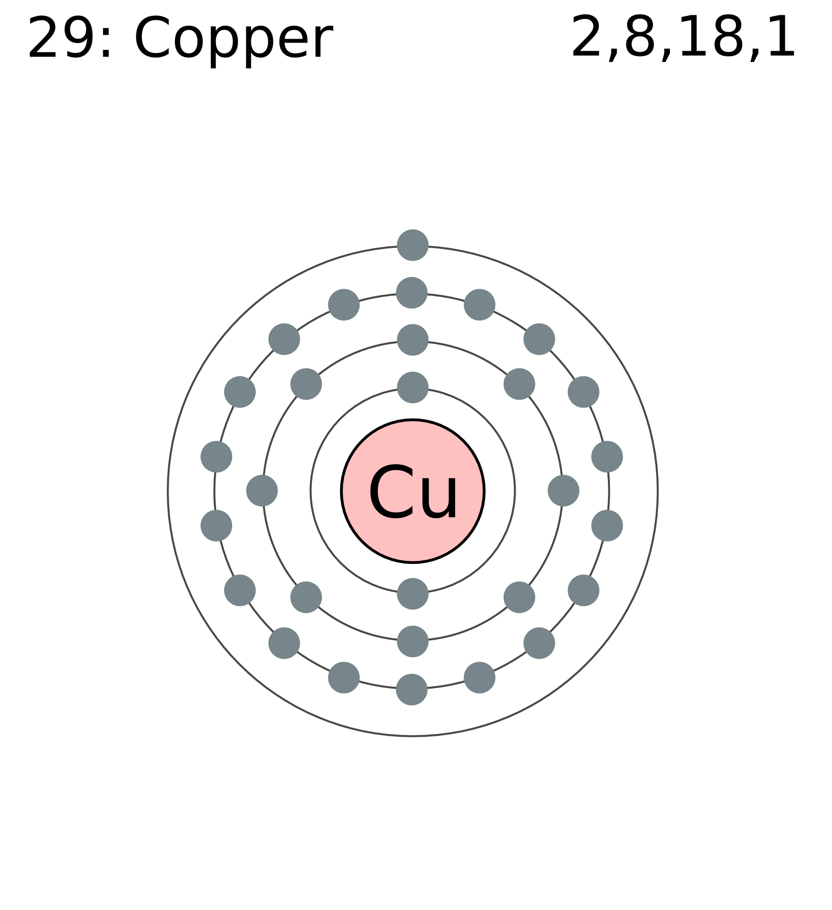
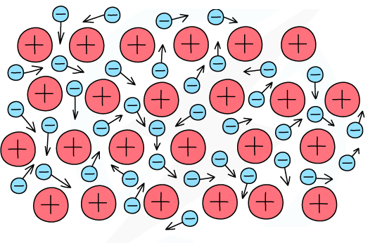
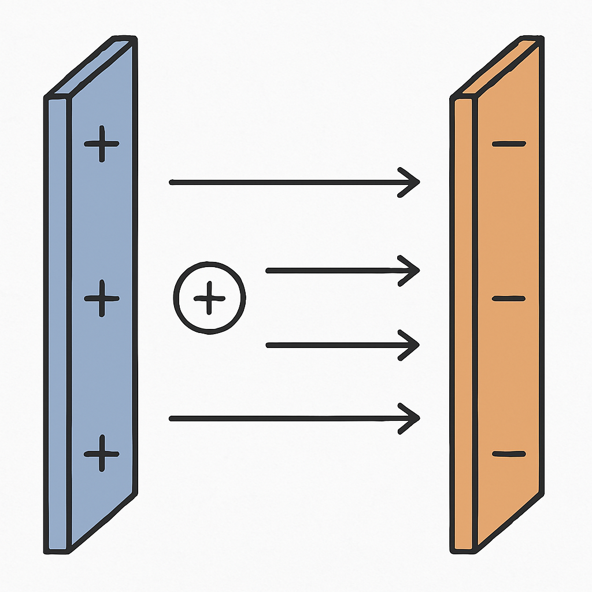
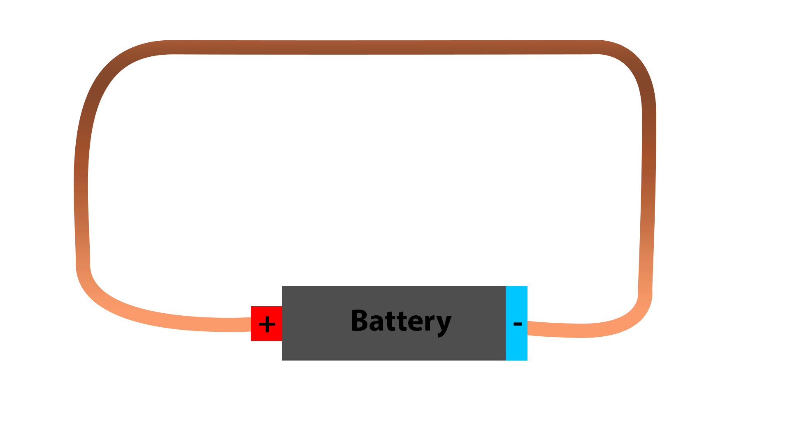

Introduction
Electricity is a fundamental concept in physics, closely related to the behavior of charges, the movement of electrons, and the interaction of electric fields. Though commonly used in daily life, its mechanisms remain abstract for many. This article aims to clarify the core principles of electricity, beginning with the microscopic organization of electrons in conductive materials, continuing with the electrostatic forces that govern their movement, and concluding with how these principles apply to real-world systems like batteries.
I) Conductive Metals
Electron Distribution in Atoms
Conductive metals such as copper (Z = 29) are characterized by their ability to allow the flow of electric current. Copper atoms have 29 electrons organized in shells. The outermost electron, loosely bound to the nucleus, is free to move within the metallic structure. These free electrons are crucial for electrical conductivity.
Electron Behavior in a Metal
In a metal, atoms are arranged in a lattice, and the outer electrons become delocalized, forming a "sea of electrons." These free electrons move randomly, resulting in a globally neutral system. However, when an electric field is applied, electrons tend to move in the opposite direction of the field. Their path is not linear due to constant collisions with the positive atomic cores, leading to a net movement in a specific direction.
II) Electrostatic Force
Description and Comparison with Gravity
The electrostatic force is the interaction between electrically charged particles. Governed by Coulomb's law, it is proportional to the product of the charges and inversely proportional to the square of the distance between them. Unlike gravity, which only attracts, electrostatic force can either attract or repel.
Charged Plates and Particle Behavior
Consider two parallel plates, one positively charged and one negatively charged. Placing a charged particle between them creates a predictable outcome: a positively charged particle experiences a force toward the negative plate, while a negatively charged one is repelled in the same direction. The direction and strength of this force define the resulting electric field.
III) Current in a Metal
Drift Velocity of Electrons
When an electric field is applied to a metal, free electrons accelerate but quickly collide with atoms, losing energy. The net result is a slow average motion called drift velocity (Vd). This velocity is directly proportional to the electric field (E): Vd = mu * E, where mu is the electron mobility in the material.
Definition of Current
Electric current corresponds to the flow of charge through a surface. It can be expressed as: I = qnS * Vd, where q is the charge of an electron, n is the density of free electrons, S is the cross-sectional area, and Vd is the drift velocity. Even though individual electrons move slowly, the overall current can be significant due to the vast number of electrons involved.

IV) Voltage and Power
Joule Effect
As electrons move and collide with atomic cores, they transfer part of their kinetic energy to the lattice, increasing its temperature. This phenomenon is known as the Joule effect, responsible for heating in resistive materials.

Voltage and Power
Voltage or electric potential difference is the energy per charge unit and can be expressed as: U = l * E, where l is the length of the conductor and E the electric field. Electric power, the rate at which energy is transferred, is given by: P = U * I. Power represents the energy used or produced per second and is fundamental in understanding how electrical devices operate.
V) The Case of a Battery
Structure and Working of a Battery
A battery consists of two electrodes (positive and negative) separated by an electrolyte. A chemical reaction inside the battery generates an electric potential difference between the two terminals.
Connecting a Wire Between the Poles
When a conducting wire is connected between the battery's terminals, it closes the circuit, allowing electrons to flow from the negative to the positive terminal. The battery maintains the potential difference, continuously pushing electrons through the wire.
Bending the Wire
Bending the wire does not affect the electric current significantly, as long as the material and cross-section remain unchanged. The drift velocity and electron collisions continue throughout the conductor regardless of its shape.
Conclusion
Electricity, at its core, is a manifestation of microscopic charge behavior under macroscopic conditions. From the atomic organization of conductive materials to the measurable effects of electric power in a circuit, understanding these principles is key to mastering many modern technologies. Real-world systems like batteries show how theoretical laws become practical tools, powering devices from smartphones to electric cars.